MISC-1
simple
1
**picture.txt **
0000000030EC0000006500100010000000006050B405106D167926B15E9A106D167938CDF6D9106D1679E6E55E6D0081001000000000000200A0F636F636000000000000000200000000000000420040000060EA000030CA7F522423058F684400800000004100F32010B40530AF3A3A0BFF8E65E3A762B05D40E12034B1C715252AC4E5BC8DA9A766B02C8D6ADD4FE51C79D31716569FB75AA7B060A00ABB1D8552034CA43CF7602EAFC7E05EA08E26F20DD21CB35086F75382FD7BDE8903D2794D4D82C248C3080EEF9CB63A34EE0FC1352C45EF0D7507A79B47D2E0F10289DA8958BB3C792EFDB60BB324F808170BC0B1EEB27AF29D831E146306C3E83DC330DAB90C1403F01F0445E6648EA39D1E864D9F293485506D523FA96586C3AE28ABAD0BDD9CA6B88350E980E89CA……B4B5651D6DDEE5874514449476920000468AF67C103CE000003CE0000037958407900000005016CFB0F81B000014D41476400000009EC1ECEA0024742537100000003B341C2C00000020808E3000008E30000025448494D0000000A0A1A0D074E40598 |
观察可得常见的文件格式（其实一眼看到的是504B），如8950等，写倒置脚本
txt='' |
将结果导入010editor，得一张png文件。
分离出一个加密压缩包，伪加密解密后得
flM{Sg_i_igl1S_ll__SfM_FF_1ilfM{Sa11gagc1lSSMgfnafg_fMa1n5iaF_c1lSFiSaf_1f{S_l_FalS5_faSl_fgl5M1_{ll!{i5c}if1__fg5{__M{ngU{1l1gff1f1iS__Mf5iFMlciSgaU{glgUF5M_1aa_f_i5{nflllla1S1FS!cSg{fUfFcS1{{ag1lU51acfUSffMcMSgfSfalFg_g_gfgfiSfla1i{{{n{_lg_}{ggi{gglg{{flnliF{M5faF1ig_agal{_{{aMMilfUSa{a5ggiiigfSSg{M_Mng{a}fcMf1_Fl{cM{1fiflMSSM{_l!Scf5FFcn{g{SFnMlf{l__aScMl{{c_lS1Sic1!l5ga1_gfggllcllccaagMU1iala55FSfia5lScMMFiMaFff{{g{fcicM!l_{iffcg{UlcMa{{5f5Mc{McfagcM_Ma1Slcf{cSg_SflM5U11_5i_fcc{FagglaMUfS1g_{lSc5f_lag5Sg_ccclca___ala1g1aSMfa_fcaFnSSi{a1a{gUif_FgaS{lacSgfga{F1fgScf1_M__{1ag_5MMSiga11g_aMl5fM15a_gla5f1_UllgcSc{Sagac{accS_i{Mf{Sgccg_ici{fgcl_gaMlffS{{i{nnfaM}aallSSg1ilUif{Mi1SMiMl1aaMUl{alaglM!1lgngScMac1fa1acafS1fgfM__S11_SM{f}la_cM_g{fniifgc1M{_lM!M5}g5_l1USg{cgl{SaccigSU1fMgl5lcaiggMFfcaca1l{Ugf_lalg1_g!{iaala_M5l1Mc11afcgfgl5f1g_c{llaUMf1lM1aF{af1Sl5lf5l1l5a_cc_c_1ff}f_ff}MlU{afM_1fcla{{gM{_Sl_M_{gM_{g5gaMaFU{{!S1ala1lfl1lifl_Mlf5F{l_g{li__aM_gfSU{lM_agM{giff{ii_{ff_naaaif1gf_ag__lnFacgiSlSac_Ma5M{fg{{fac{gllfaa{Mi5MnMff{{gc!fn_iU{ll5i_Saa5M{Mi}{g{Ffl{Ffac!a{afffgl!_gMalF_c{lac_MFMg5acMFcla5cMlU5aSff{l_UFf_Ug1!g1F_c{{aMMg{SlgUa1ca1ff5_c1g5{fligg11_lla_fcf1{Mla1MnglM{5lSl1g__Sll_cUc5MSa{_fiMiiS1c{M1g_SSUifi1!Saa{_glS1aaal{llF1cFgig_Sf{acf{Uf1c1fa!gfFM_aS51lgaMa1aa_gfif_ia{M_a_M1fMSaSSfMSl{1gFcl151l_lFfMilffgf1gSSgcaf_SfMgaf{}ilaUMM_MU5ff551i5SnFgc15nSMa1M{{_fSlMg{{5fcS1g5fSgMMUi{_ig5falf1nfgFaUMlff!g__la_F_c1{i1!{lc{i{1iglM_fUgl___a5fnMaFf{_lfll_igf1lcalniMag_5nFS1MMaiM1ll5SlMiaf_5l{af__MMgac_Mf__fUa1fc{1{_55SF!llfgU1l1U_Mal_l{alglSglcnlfSfaacgSSgSc_Maa{ffg51MaSfca1U_{gfS1ff5l{{f1Ml_gSgc_n5iS1Sg_l__1nnM1lM15MillfaMff1!nl1fFSM5Fflf{acagl{Sf{ggfSi1f!FSagf{{lFf5la5{ff__lM{M_fUlSgi |
词频分析脚本
from collections import Counter |
得到flag
Counter({'f': 180, 'l': 170, 'a': 160, 'g': 150, '_': 150, '{': 140, 'M': 130, '1': 120, 'S': 110, 'c': 100, 'i': 80, '5': 70, 'F': 50, 'U': 40, 'n': 30, '!': 20, '}': 10}) |
flag_{M1Sc5FUn!}
2
xxx
一个没有后缀名的文件，常规操作查看十六进制。
看到压缩包的文件头，手动分离后，得一个加密压缩包，里面有一个doc文件“你找flag吗”，下一步就是找压缩包的密码了！
对第一部分数据做处理，尝试base64解密，得
Windows Registry Editor Version 5.00 |
头一次解除这样的文件，后来才知道这是注册表的内容，搜索了一把，发现与安恒月赛的部分相似
下一步应对
“Password”=hex:37,5e,be,86,70,b3,c6,f3
进行VNC解密，密码为!QAZ2wsx
压缩包解密后得一个很多换行符的word，又卡住了
经提醒，与某一场比赛类似，doc改成zip，可得很多xml文件。word/document.xml打开，又愣了好久，
在后半部分发现
<w:t>MZWGCZ33GY4TQZBVGFQTCOLEHBQTCMRRMNSTKOBRGQ4TSZBXMI3TAMJWGY4H2===
试试一把梭
base32:
b’flag{698d51a19d8a121ce581499d7b701668}’
3
src：迷惑行为大赏（之）无中生you
给了一个表情包和一个加密压缩包。
555，又一筹莫展了。CTFshow问了好几个师傅，提示更改高度，得到了”密码：没技术，是菜鸡”，emmm
txt里是这样的
|
得到一串字符串
U2FsdGVkX19VMkZzZEdWa1gxK3A4VGlVNGRKZng1ZUlkTi9XY2lDR3VCaDBXOStLVDVPT3hxT082NUo4RUsxMUFKNWptWGE5R1pwY2RVazhKNzNTSmJaREdyVVlVZHp0R2d0WWpQalN5dUJNYVkzeXowS1NxYkh5SE12VEhEYXcvVEhvMkJFN3hmcEJmVDBlY0syK3FJYzl5ZEdlV2w1VjhZcFAxSzA1a3FmRUhHUjQ0bmxNTEEyZDZhM1ZPbVVaNkg4V0xVU1lhL3NqdDV6TFV0bTM5UUloajdkbTluZlk5cEF6MHJVc3VscDdIcmlwUlNJOWJURGx1cXMvUnVWcnlGZHpLWS9kU0w2U2pUTmtyUzVpb3FqQjQ1L0lPNXM2U2lBWEwvQkpJVWczZ2t0MDNhMmRnMEJZSGJPSkFhdDlVQ2VEZ3BOeUFLZ1RWbS8xNXN3WUpWdWhTU1lNU3ppRzVWTTR6RmVGaDhpWDBkK200TitodDNneWhVcDhaSGdaK1hxMmRoajFkc1ZQMVZaU2ZoUkE3TzRRdm5LdGJIeDE5REdRT09vNndlZ1pxOXZuRDZjaVlDcFltWUpYcmMvaFpSUVA4WHdYRTNhZnhtdWpQSE8wOEpJZmhaMkNCeXZycjQ2a1BPR2s= |
base一把梭
base64: |
其中’Salted__’是网站自带的，去掉。
Triple DES解密后
SNOW.EXE -C -p “没技术，是菜鸡” 文件
得flag{l0ts_0f_?????????????}
3
challenge.wav： 记得给我打电话
电话音参考网站DTMF Tone，
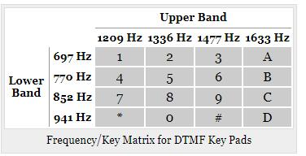
45774391614390919680552035340229102217126562041792203410479326635706552497458
>>> print(hex(num)) |
十六进制转字符串
e3c53cbec96ea8bde0c294e520b37a52
flag包裹即可
4
2020太湖杯：misc
分离出压缩包后得：
U2FsdGVkX194m4B5HqBSGYPLTS4bywdKDJh13lrSj/OcwgSAoHBw9X/p2IdEtGx7 |
希尔密码：
密文：
waoootu.epj.nv o
明文：
love and peaceee
rabbit解密：
密文：
上述类base64
密钥：
love and peaceee
明文：
LR2TMNLCGBOHKNDGGVRFY5JWGZTDAXDVMZTDCYK4OU4GCZRYLR2TSNTCHBOHKNJUMM4VY5JVGBSTOXDVHE3DIZC4OU2TIM3ELR2TQYLGHBOHKOJWGQYFY5JWGQ3DSXDVHE3GEOC4OU2TAZJXLR2TOZRTMROHKOBVME4VY5JVGRQTIXDVHAYDEOC4OU4GCZRYLR2TSNTCHBOHKNRRGY3VY5JVHA2WKXDVHAZDOMS4OU2WGMDBLR2TKNDDHFOHKODGMU3FY5JYMFSTMXDVG5QTOYK4OU3DENBQLR2TSNRUMROHKNRSGEYVY5JVMZTDKXDVHE3GEOC4OU3TSNJXLR2TQYLFGZOHKNLGMY2VY5JVGRRTSXDVHE3DIMC4OU2TMYRULR2TKNDDHFOHKNJWMM4VY5JUMZSWKXDVGU4TGN24OU4TMM3GLR2TMY3FGJOHKOBSG4ZFY5JYGM4GCXDVGVRGGMS4OU4GCZJWLR2TKOBVMVOHKNJUHEZFY5JYGM4GCXDVG43TGZK4OU3DEMJRLR2TKNDDHFOHKNRSGQYFY5JUMYYGMXDVHAYDKZK4OU4DKYJZLR2TSNTCHBOHKNRRGBSFY5JZGVRWIXDVGU2DGNS4OU3DENBQLR2TIZTFMVOHKNRWGJTFY5JYGI3TEXDVGY2DMOK4OU4GCMZWLR2TKNTCGROHKNJUMM4VY5JZHA2TQXDVGYYTAZC4OU2TIYZZLR2TKMZXGNOHKNDGMVSVY5JVGRRTSXDVG5QTOYK4OU4DOMLDLR2TSNRUGBOHKNJWMM4VY5JUMYYGMXDVGVTGMNK4OU2TIYZZLR2TMNBWHFOHKNJUMM4VY5JUMVQTMXDVHAZTQYK4OU2TIYZZLR2TONZTMVOHKNJUME2FY5JVHE4DEXDVHE4DKOC4OU2TSOBS |
卡住了，傻逼
base32:
\u65b0\u4f5b\u66f0\uff1a\u8af8\u96b8\u54c9\u50e7\u964d\u543d\u8af8\u9640\u6469\u96b8\u50e7\u7f3d\u85a9\u54a4\u8028\u8af8\u96b8\u6167\u585e\u8272\u5c0a\u54c9\u8fe6\u8ae6\u7a7a\u6240\u964d\u6211\u5ff5\u96b8\u7957\u8ae6\u5ff5\u54c9\u9640\u56b4\u54c9\u56c9\u4fee\u5937\u963f\u6ce2\u8272\u838a\u5bc2\u8ae6\u585e\u5492\u838a\u773e\u6211\u54c9\u6240\u4f0f\u805e\u85a9\u96b8\u610d\u95cd\u5436\u6240\u4fee\u662f\u8272\u6469\u8a36\u56b4\u54c9\u9858\u610d\u54c9\u5373\u4fee\u54c9\u7a7a\u871c\u9640\u56c9\u4f0f\u5ff5\u54c9\u6469\u54c9\u4ea6\u838a\u54c9\u773e\u54a4\u5982\u9858\u5982 |
unicode解密：
新佛曰：諸隸哉僧降吽諸陀摩隸僧缽薩咤耨諸隸慧塞色尊哉迦諦空所降我念隸祗諦念哉陀嚴哉囉修夷阿波色莊寂諦塞咒莊眾我哉所伏聞薩隸愍闍吶所修是色摩訶嚴哉願愍哉即修哉空蜜陀囉伏念哉摩哉亦莊哉眾咤如願如
新佛曰解密：
Live beautifully, dream passionately, love completely.
压缩包解密得fun.wav,调成频谱图后，得
flag{m1sc_1s_funny2333}
5
[BJDCTF 2nd]TARGZ-y1ng
哎？ 我的tar zxvf怎么不好使了？
解压密码不需要爆破
得到的 flag 建议用 flag{} 包上提交。
得到一名为hW1ES89jF.tar.gz，由于题干说解压密码不需要爆破，尝试后发现上一级的压缩包名为下一级的密码。
本想手分，但是太麻烦了，学着写脚本。
更改之后的脚本如下：
import zipfile,os |
6
[HBNIS2018]excel破解
得到的 flag 请包上 flag{} 提交。来源：https://github.com/hebtuerror404/CTF_competition_warehouse_2018
得到一xls表格，更改后缀名为zip/rar，十六进制查看，搜索flag得
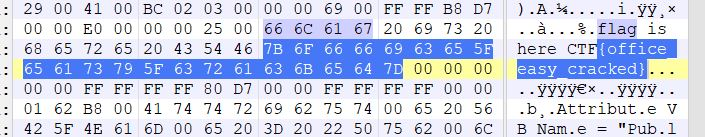
flag{office_easy_cracked} |
7
[SWPU2019]伟大的侦探
得到的 flag 请包上 flag{} 提交。
下载得到一部分加密得压缩包。密码.txt和名为misc的文件夹。
密码.txt👇
压缩包密码:摂m墷m卪倕ⅲm仈Z |
拖进010editor中改变编码方式（为了避免混淆，删除语句中可能形成干扰的部分）
最后在EBCDIC编码中发现可能的语句
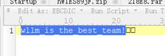
wllm_is_the_best_team!
解压压缩包，得到一些跳舞的小人👇
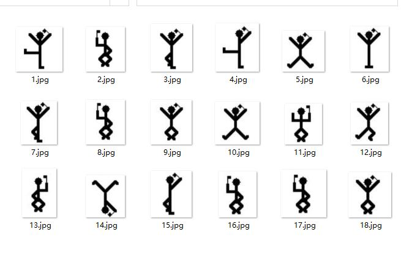
1 2 3 4 5 6 |
尝试第一种方法：
在英文中，e的使用频率最高，而这18张图中2的使用频率最高：
2->e
试着对应起来：
xxexxx
xexxxx
xxxeex
感觉不可能。
第二种方法：
搜索引擎搜索“小人密码”，发现为福尔摩斯中出现过的一种解密方法👇
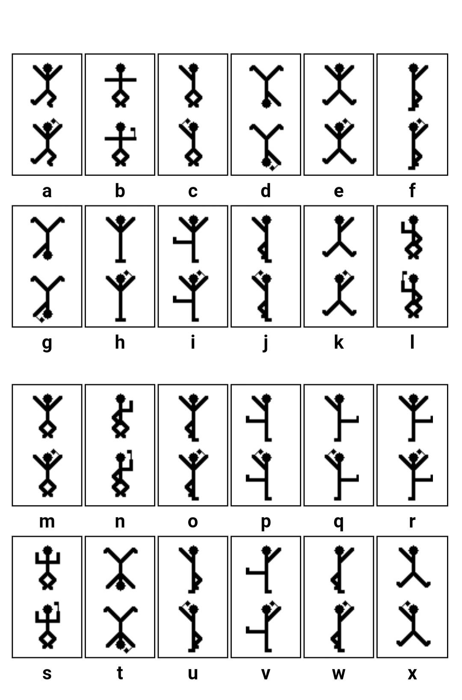
试着对应起来：
iloveh
olmesa
ndwllm
flag{iloveholmesandwllm}
8
[WUSTCTF2020]find_me
得到的 flag 请包上 flag{} 提交。感谢 Iven Huang 师傅供题。比赛平台：https://ctfgame.w-ais.cn/
右键查看文件的详细信息或者EXIFTOOL查看元数据👇
⡇⡓⡄⡖⠂⠀⠂⠀⡋⡉⠔⠀⠔⡅⡯⡖⠔⠁⠔⡞⠔⡔⠔⡯⡽⠔⡕⠔⡕⠔⡕⠔⡕⠔⡕⡍= |
盲文在线解密网站：
https://www.qqxiuzi.cn/bianma/wenbenjiami.php?s=mangwen
9
[MRCTF2020]你能看懂音符吗
得到的 flag 请包上 flag{} 提交。感谢Galaxy师傅供题。
得到一个损坏的压缩包。十六进制查看后发现文件头损坏
RAR正确文件头如下：
0000h: 52 61 72 21 Rar! |
得到你能看懂音符吗.docx，由于笔者默认打开所有隐藏字符，故能直接看到隐藏字符。可以猜测为音符编码
无法复制，更改后缀为.zip，\word\document.xml中能得到该文档的内容信息：
<w:t>♭♯♪‖¶♬♭♭♪♭‖‖♭♭♬‖♫♪‖♩♬‖♬♬♭♭♫‖♩♫‖♬♪♭♭♭‖¶∮‖‖‖‖♩♬‖♬♪‖♩♫♭♭♭♭♭§‖♩♩♭♭♫♭♭♭‖♬♭‖¶§♭♭♯‖♫∮‖♬¶‖¶∮‖♬♫‖♫♬‖♫♫§=</w:t>...<w:t>这都让你发现了，可是你能看懂吗？</w:t> |
找到了在线音乐符号解密的网站
MRCTF{thEse_n0tes_ArE_am@zing~} |
10
[安洵杯 2019]吹着贝斯扫二维码
得到的 flag 请包上 flag{} 提交。
555,我讨厌拼图，giao
得到压缩包里很多无后缀的文件。通过010editor，可得这些都为jpg文件。
打开得到碎片化的二维码。拼！
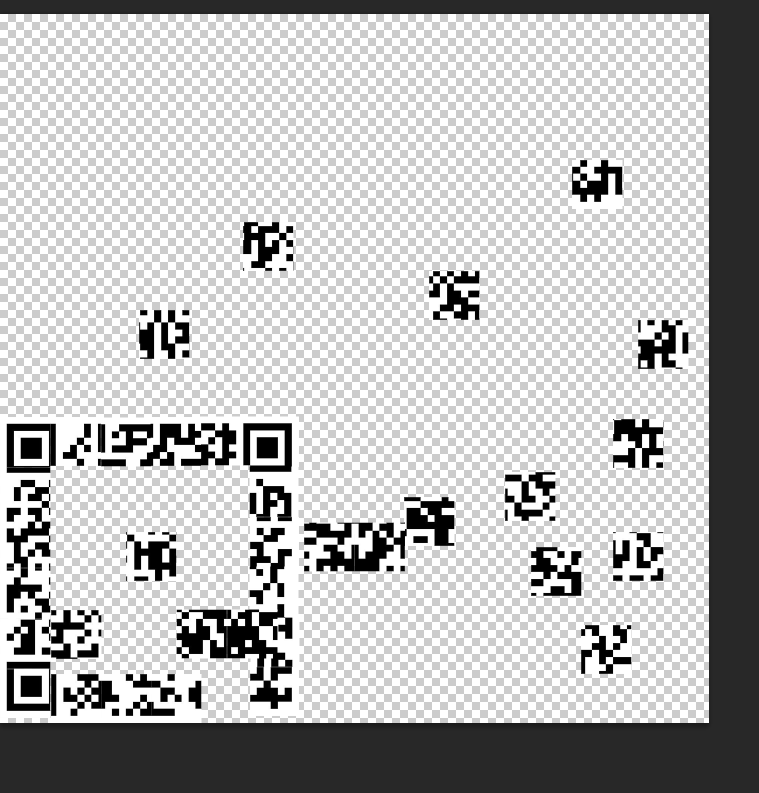
人都傻了，得到
BASE Family Bucket ??? 85->64->85->13->16->32 |
根据提示，一步一步来吧。中间还用到了rot13
得ThisIsSecret!233
打开压缩包，得到flag
flag{Qr_Is_MeAn1nGfuL} |
11
从娃娃抓起
得到的 flag 请包上 flag{} 提交。
0086 1562 2535 5174 |
之前做过类似的题，那道题为”计算机要从娃娃抓起”，用到了中国电码。试试看
第一排数字正好对应中国电码中的“人工智能”
第二排两个重复的vffg猜测为“娃娃”
另，若熟悉五笔打字的话，就能知道第二行其实是五笔编码“也要从娃娃抓起”
“人工智能也要从娃娃抓起”的32位小写md5就是
3b4b5dccd2c008fe7e2664bd1bc19292 |
12
[DDCTF2018](╯°□°）╯︵ ┻━┻]
得到的 flag 请包上 flag{} 提交。
d4e8e1f4a0f7e1f3a0e6e1f3f4a1a0d4e8e5a0e6ece1e7a0e9f3baa0c4c4c3d4c6fbb9b2b2e1e2b9b9b7b4e1b4b7e3e4b3b2b2e3e6b4b3e2b5b0b6b1b0e6e1e5e1b5fd |
十六进制丢进010editor中，未果。
进制转换，得
212 232 225 244 160 247 225 243 160 230 225 243 244 161 160 212 232 229 160 230 236 225 231 160 233243186160196196195212198251185178178225226185185183180225180183227228179178178227230180179226181176182177176230225229225181253 |
未见有意义字符串。
对128取余试试，212-》84-》T
成了，依次操作得
That was fast! The flag is: DDCTF{922ab9974a47cd322cf43b50610faea5} |
13
小易的U盘
小易的U盘中了一个奇怪的病毒，电脑中莫名其妙会多出来东西。小易重装了系统，把U盘送到了攻防实验室，希望借各位的知识分析出里面有啥。请大家加油噢，不过他特别关照，千万别乱点他U盘中的资料，那是机密。 注意：得到的 flag 请包上 flag{} 提交
额，这道题还挺啊这的。
一开始以为是流量分析啥的，后来发现二进制查看就是个压缩包，还原rar后缀名。
得到一串exe和一堆有的没的（例如不要在上班时间打开的某雷链接
找到autorun.inf,写着
[AutoRun] |
把autoflag - 副本 (32).exe放进ida，main函数直接得flag
flag{29a0vkrlek3eu10ue89yug9y4r0wdu10} |
14
[GUET-CTF2019]zips
注意：得到的 flag 请包上 flag{} 提交
附件里有一名为222.zip的加密压缩包，通过ziperello暴力破解得密码723456
得到名为111.zip的加密压缩包，其中存在flag.zip以及一提示文件头损坏的setup.sh
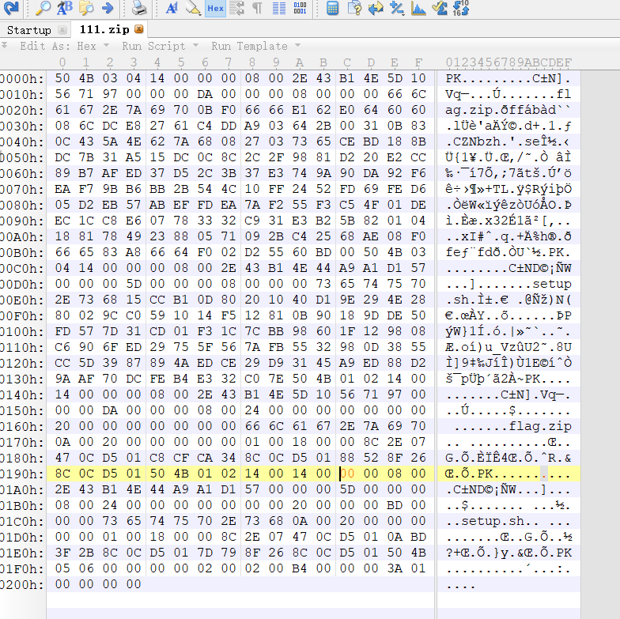
上图为111.zip的二进制查看。常见的伪加密。504B0102 1400 1400 0000此处改为偶数即可。
setup.sh👇
#!/bin/bash |
按照提示执行这段代码
>python2 -c "print(__import__('time').time())" |
可看出跟时间戳有关（python3执行有精度差异
>python3 -c "print(__import__('time').time())" |
对flag.zip进行掩码爆破（出题时时间戳比已知的数字小，至于小多少就自行猜测了
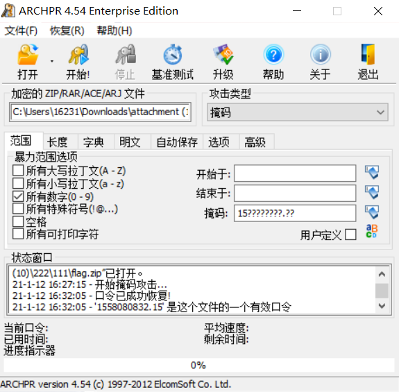
密码1558080832.15
flag{fkjabPqnLawhvuikfhgzyffj} |
15
[MRCTF2020]千层套路
得到的 flag 请包上 flag{} 提交。
感谢天璇战队供题。
天璇战队平台：http://ctf.merak.codes/
这道题算是能得到锻炼的好题叭
首先是套娃解zip，名字就是下一层的密码：
import zipfile,os |
得到qr.txt：40000行格式为
(255, 255, 255) |
不难想到是RGB成像。
40000=200*200
修改手头脚本：
from PIL import Image |
得到一张二维码。扫码得
MRCTF{ta01uyout1nreet1n0usandtimes} |
调通脚本的过程真是太有成就感了
16
二维码
一不小心把存放flag的二维码给撕破了，各位大侠帮忙想想办法吧 注意：得到的 flag 请包上 flag{} 提交
我爱PS（当然不可能了：）
修了半天依然不能识别，于是还是手拼叭淦
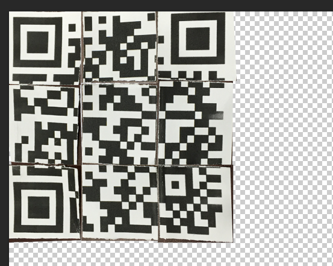
17
[WUSTCTF2020]爬
得到的 flag 请包上 flag{} 提交。
感谢 Iven Huang 师傅供题。
比赛平台：https://ctfgame.w-ais.cn/
有一说一，在做了上一题的死亡二维码后，看到这道题的头都大了。
无后缀名的文件-》查看二进制-》.pdf-》提示flag在图片后面-》转word-》移动图片无发现-》.zip->查看word/media-》得到两张图片
一张是已知的【爬】，一张就是出题人想隐藏的
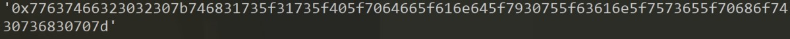
手输十六进制
77637466323032307b746831735f31735f405f7064665f616e645f7930755f63616e5f7573655f70686f7430736830707d |
wctf2020{th1s_1s_@_pdf_and_y0u_can_use_phot0sh0p} |
看来出题人是想让咱们通过PS将pdf转换成word，这是笔者目前不会的，望告知（目前笔者用的是【迅读PDF大师】
18
[MRCTF2020]CyberPunk
得到的 flag 请包上 flag{} 提交。
感谢天璇战队供题。
天璇战队平台：http://ctf.merak.codes/
exe运行起来后👇
I love cyberpunk2077! |
修改系统时间即可
MRCTF{We1cOm3_70_cyber_security}每隔10s刷新一次 |
19
[SWPU2019]Network
得到的 flag 请包上 flag{} 提交。
一道平平无奇的脚本题
63 127 255 通过进制转换联想到00 01 10 11
f = open("attachment.txt", "r") |
转十六进制
number = '' |
得到1.zip（通过number能看出该文本为压缩包的二进制
压缩包内有flag.txt，内容为多重base64加密
解码得flag
flag{189ff9e5b743ae95f940a6ccc6dbd9ab} |
20
[GUET-CTF2019]虚假的压缩包
得到的 flag 请包上 flag{} 提交。
真实的压缩包.zip和虚假的压缩包.zip
不得不说，虽然360会忽略掉很多本该被注意的错误，但是有的时候还是很有用的（比如伪加密
直接用360可打开【虚假的压缩包.zip】
数学题 |
简单的RSA
答案是5 |
解开真实的压缩包
一张图和一个文件
图平平无奇，用到的是misc入门方法，更改高度，得到提示【^5】
【亦真亦假】里是一串无意义数字
与5异或
original = open("亦真亦假",'r').read() |
得到504B0304为首的字符，更改后缀名为.zip后，能看到这是个word。更改后缀名为.docx
得到一篇文章。
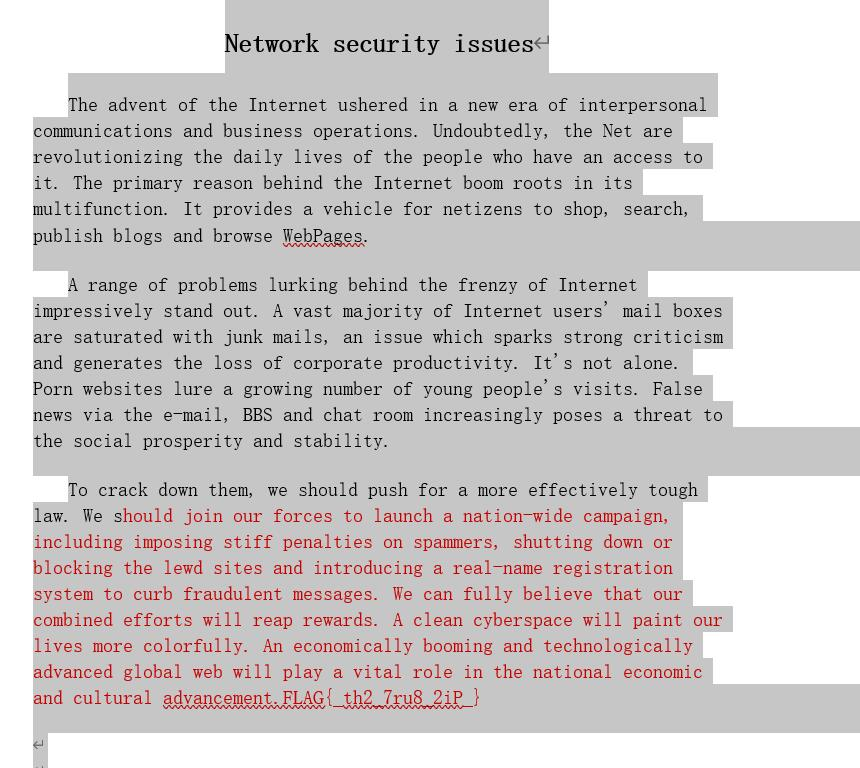
通过空格的位置，全选上色，得flag
FLAG{_th2_7ru8_2iP_} |